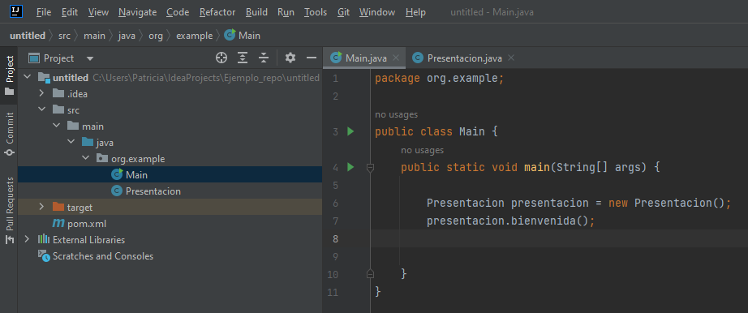

¿QUÉ ES UN PROYECTO JAVA? ORGANIZACIÓN DE ARCHIVOS .JAVA, .CLASS Y OTROS
Un proyecto Java podemos considerarlo como una serie de carpetas ordenadas y organizadas de acuerdo con una lógica para mantener organizado el código. Un proyecto suele constar de archivos .java, archivos .class y documentación.
- Los archivos .java contienen el código fuente (entendible por humanos) que en un momento dado podemos modificar con un editor de textos, y suelen encontrarse en carpetas de nombre src (source).
- Los archivos .class contienen el bytecode (no entendible por humanos pero sí por la JVM) y suelen encontrarse en carpetas de nombre bin (binary).
- La organización de los archivos en carpetas y la presencia de otros adicionales depende del entorno de desarrollo (IDE) que utilicemos. Además, Java introduce un esquema organizativo a través de paquetes (packages).
En IntelliJ IDEA (que es el IDE que usamos nosotros), la estructura de carpetas de proyecto y packages aparecen a la izquierda de la interfaz:

Otras consideraciones
/* Este es un programa simple en Java...
NombreArchivo: "HolaMundo.java". */
class HolaMundo {
// Tu programa comienza con una llamada a main().
// Imprime "Hola Mundo" en la ventana de la terminal.
public static void main(String args[])
{
System.out.println("Hola Mundo");
}
}- El nombre de una clase definida debe ser igual que el nombre del archivo.
- El método main siempre es el punto de entrada para la aplicación.
- La clase System sirve para manejar las entradas, salidas y manejo de errores.